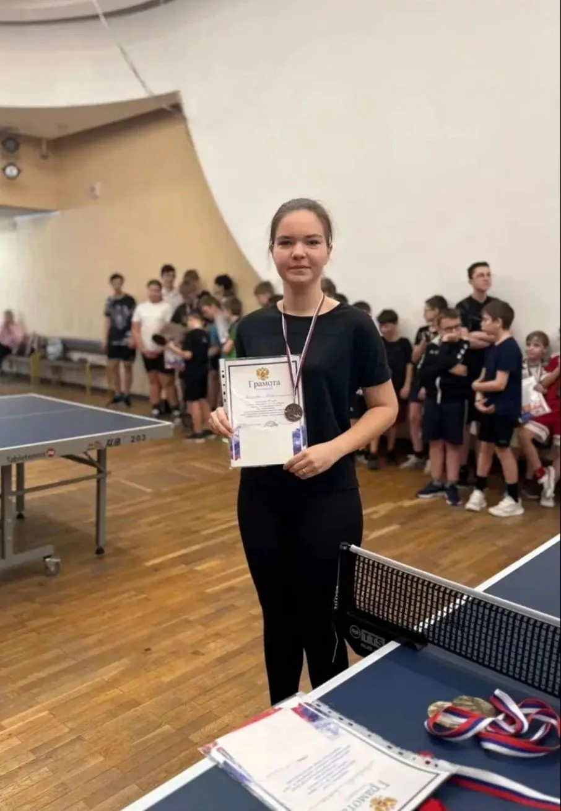
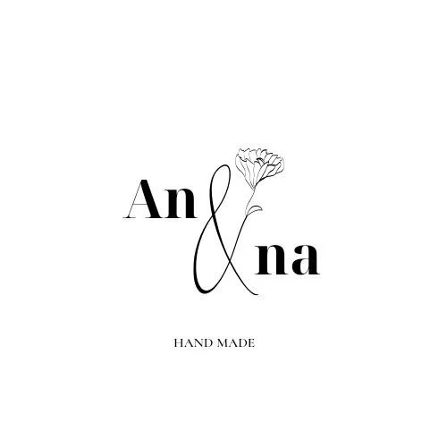
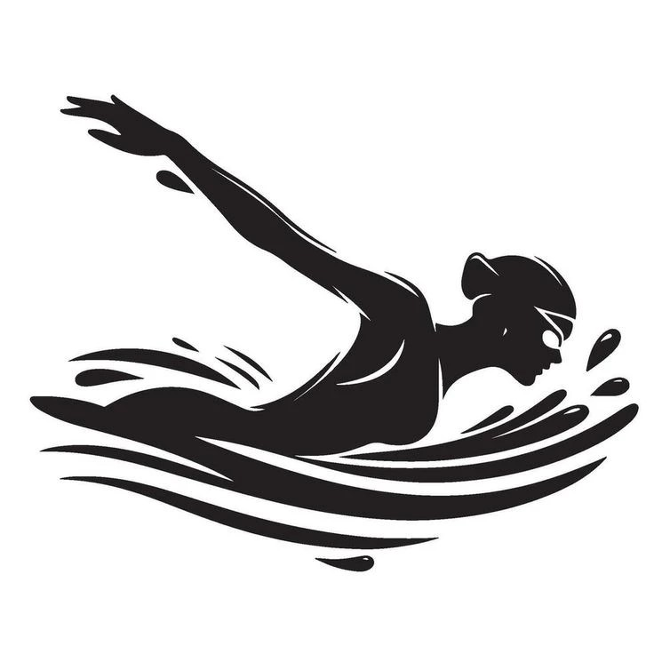
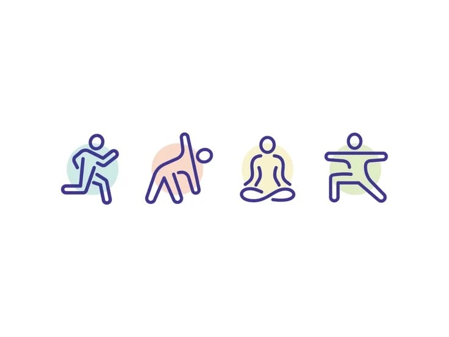

Настольный теннис

- Занимаюсь уже 11 лет
- Играю профессионально
- Мой любимый вид спорта с детства

Помимо учёбы и работы у меня есть несколько увлечений, которые помогают мне поддерживать форму, отдыхать и развиваться.



Учёбу я совмещаю с работой и тренировками.
Мне помогает дисциплина, которую я выработала
за годы занятий настольным теннисом.